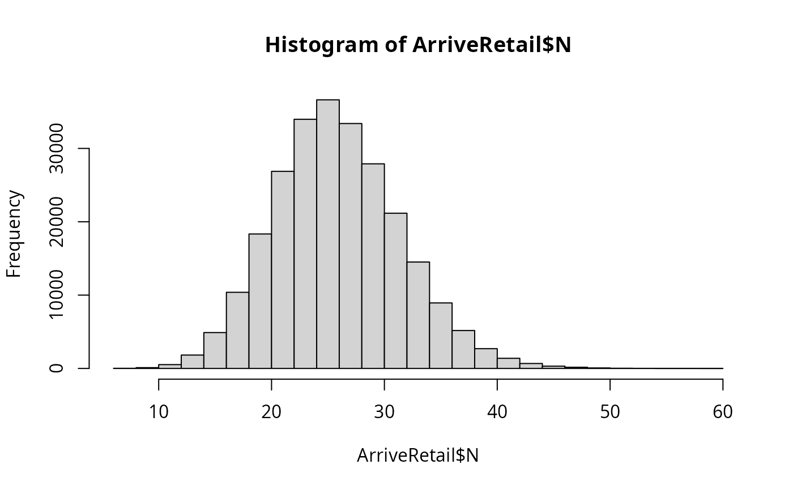

Transport of RTE diced cantaloupe packs from the end of processing to retail
Source:R/caTrans2RetRTE.R
caTrans2RetRTE.RdThe function caTrans2RetRTE() simulates the growth of L. monocytogenes in RTE diced cantaloupe during cold transport
to retail, and is based on the function caGrowthBaranyi(). The algorithm considers that RTE diced cantaloupe packs
from every lot are subjected
to the same initial q0 (related to lag phase), the same transportation temperature (Temp), and the same transportation time.
The normal distribution with parameters lnQ0Mean and lnQ0Sd represents the variability about ln_q0, a parameter
related to the physiological state of cells in the Baranyi ad Roberts' growth model. The uncertainty about EGR5 is
represented by a normal distribution with parameters meanEGR5 and sdEGR5. Pert distributions represent the
lot-specific variability in transport time and temperature.
Usage
caTrans2RetRTE(
data = list(),
MPD,
unitSize = NULL,
meanEGR5,
seEGR5,
Tmin,
tempMin,
tempMode,
tempMax,
timeMin,
timeMode,
timeMax,
lnQ0Mean,
lnQ0Sd
)Arguments
- data
a list of:
- N
(
CFU) A matrix containing the numbers of L. monocytogenes in packs of RTE diced cantaloupe before transport, from contaminated lots.- P
Prevalence of contaminated lots (scalar).
- MPD
(\(log10\ CFU/g\)) Maximum population density of L. monocytogenes in cantaloupe flesh (scalar).
- unitSize
(
g) Weight of a pack of cantaloupe dices (scalar).- meanEGR5
(\(h^{-1}\)) Mean exponential growth rate of L. monocytogenes in cantaloupe flesh at 5 \(^\circ C\) (suggested \(default=0.03557288\ h^{-1}\)) (scalar).
- seEGR5
(\(h^{-1}\)) Standard error about the mean of the exponential growth rate of L. monocytogenes in cantaloupe flesh at 5 \(^\circ C\) (suggested \(default=0.004\ h^{-1}\)) (scalar).
- Tmin
(\(^\circ C\)) Nominal minimum temperature for growth of L. monocytogenes in cantaloupe flesh (suggested \(default=-2.0196\ ^\circ C\)) (scalar).
- tempMin
(\(^\circ C\)) Minimum transportation temperature (scalar).
- tempMode
(\(^\circ C\)) Mode of the transportation temperature (scalar).
- tempMax
(\(^\circ C\)) Maximum transportation temperature (scalar).
- timeMin
(
h) Minimum transportation time (scalar).- timeMode
(
h) Mode of the transportation time (scalar).- timeMax
(
h) Maximum transportation time (scalar).- lnQ0Mean
Mean of the natural log of
Q0(suggested \(default=-0.096728\) at \(time=0\)) (scalar).- lnQ0Sd
Standard deviation of the natural log of
Q0(suggested \(default=0.063930\) at \(time=0\)) (scalar).
Value
A list of five elements:
- N
(
CFU) A matrix containing the numbers of L. monocytogenes in packs of RTE diced cantaloupe after transport, from contaminated lots;- P
Prevalence of RTE diced cantaloupe lots contaminated with L. monocytogenes (scalar);
- lnQt
Natural log of the
Qparameter at the end of transportation (matrix);- lotEGR5
(\(h^{-1}\)) Growth rate of L. monocytogenes in cantaloupe flesh specific to every lot (vector);
- unitSize
(
g) Weight of a pack of cantaloupe dices.
Note
meanEGR5, seEGR5 and Tmin were determined from fitting a square-root model to data extracted from multiple sources, as described in
more detail in the function caGrowthBaranyi(). lnQ0Mean and lnQ0Sd were determined by running a Monte Carlo simulation to data in canary melon
consisting of growth rate and lag phase duration obtained at different temperatures. Such data were extracted from Scolforo2017;textualqraLm.
The suggested parameters for the Pert distribution of transportation temperature are taken from Ding2013;textualqraLm and SantAna2014;textualqraLm:
\(Temp\_min=3\ ^\circ C\), \(Temp\_mode=5\ ^\circ C\) and \(Temp\_max=10.3\ ^\circ C\). Parameters for the transportation time distribution should be defined by the user.
In addition to the final L. monocytogenes numbers, the function also returns the lot-specific values of lotEGR5 and lnQt so that the
L. monocytogenes growth could be followed up in subsequent logistics stages.
Author
Ursula Gonzales-Barron ubarron@ipb.pt
Examples
timeMin <- 2
timeMode <- 5
timeMax <- 9
nLots <- 1000
sizeLot <- 250
dat <- list(
N = matrix(rpois(nLots * sizeLot, 23), nLots, sizeLot),
P = 0.4,
unitSize = 200
)
ArriveRetail <- caTrans2RetRTE(dat,
MPD = 8.5,
meanEGR5 = 0.03557288,
seEGR5 = 0.004,
Tmin = -2.0196,
tempMin = 3,
tempMode = 5,
tempMax = 10.3,
timeMin = timeMin,
timeMode = timeMode,
timeMax = timeMax,
lnQ0Mean = -0.096728,
lnQ0Sd = 0.063930
)
str(ArriveRetail)
#> List of 9
#> $ N : num [1:1000, 1:250] 30 29 27 27 30 25 31 23 31 18 ...
#> $ P : num 0.4
#> $ unitSize : num 200
#> $ lotMeans : num [1:1000] 0.142 0.138 0.125 0.136 0.136 ...
#> $ unitsCounts: num [1:250000] 0.15 0.145 0.135 0.135 0.15 0.125 0.155 0.115 0.155 0.09 ...
#> $ lnQt : num [1:1000, 1:250] 0.3805 0.3291 0.0736 0.1342 0.1828 ...
#> $ lotEGR5 : num [1:1000] 0.0351 0.0356 0.0317 0.0335 0.0324 ...
#> $ Tmin : num -2.02
#> $ MPD : num 8.5
hist(ArriveRetail$N)
